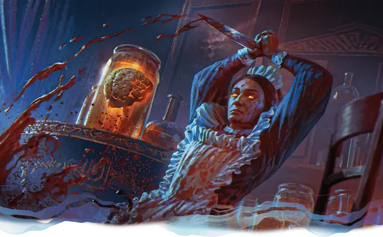

Мозг в банке
Brain in a Jar
Маленькая Нежить, Принципиальная Злая

Класс Защиты 11 Инициатива −4 (6)
Хиты 55 (10к6 + 20)
Скорость 5 футов, Полёта 20 футов (парит)
| мод | спас | ||
|---|---|---|---|
| СИЛ | 1 | −5 | −5 |
| ЛОВ | 3 | −4 | −4 |
| ТЕЛ | 15 | +2 | +2 |
| мод | спас | ||
|---|---|---|---|
| ИНТ | 19 | +4 | +6 |
| МДР | 10 | +0 | +0 |
| ХАР | 15 | +2 | +4 |
Иммунитеты Истощение, Парализованный
Чувства пассивное Восприятие 10, Слепое зрение 120 футов
Языки понимает Общий плюс ещё три языка, но не говорит, Телепатия 60 фт.
Опасность 3 (700 опыта; БВ +2)
Особенности
Обнаружение интеллекта. Мозг магическим образом ощущает присутствие любого существа со значением Интеллекта 3 и выше в пределах 300 футов от себя независимо от преград.
Сопротивление магии. Мозг совершает с Преимуществом спасброски от заклинаний и прочих магических эффектов.
Действия
Мультиатака. Мозг совершает две атаки Морочащим импульсом.
Морочащий импульс. Бросок рукопашной или дальнобойной атаки: +6, досягаемость 5 фт. или дистанция 120 фт. Попадание: 11 (2к6 + 4) Психического урона. Цель не может совершать Реакции и получает Помеху на спасброски для поддержания Концентрации до конца своего следующего хода.
Взрыв сознания (Перезарядка 5–6). Спасбросок Интеллекта: Сл 14, все существа в 60-футовом Конусе. Провал: 14 (4к6) Психического урона, и цель Недееспособна до конца следующего хода мозга. Успех: Только половина урона.
Сотворение заклинаний. Мозг в банке сотворяет одно из следующих заклинаний, не нуждаясь в компонентах заклинания (заклинательная характеристика — Интеллект, Сл спасброска заклинаний 14):
Неограниченно: Волшебная рука, Обнаружение мыслей, Очарование личности
1/день каждое: Принуждение, Удержание личности, версия 3-го уровня
Бонус мастерства +2
Среда обитания Город
Сокровища Магические
Мозг в банке
Бестелесный гений-манипулятор
Мозг в банке — это серое вещество того, кто обманул смерть с помощью магии или жутких операций. Теперь он навязывает свою волю окружающим.
Некоторые мозги в банках — результат странных экспериментов, гротескных наказаний или противоестественных способов консервации, практикуемых ми-го и другими существами. Контейнером для мозга может служить инопланетное устройство, вычурный стеклянный сосуд или самая обычная канистра.